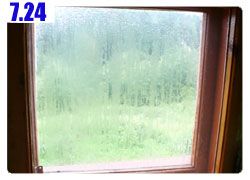

寒冷的夏天
俄羅斯有一種蚊子，很大隻，是正常蚊子的五倍大，不會嗡嗡叫，也不怕人，揮趕也沒用，除非將牠拍走。
因為牠不會嗡嗡叫，所以很難察覺它的存在，等用肉眼看到的時候，都會因為牠的尺寸而嚇一跳。
夜裡睡在帳篷裡，睡袋是攤開的，清晨的時候超級冷，趕緊將睡袋拉起來變成草履蟲模式。
回想當初環法睡在加油站，那一個晚上真是這輩子最寒冷的一個晚上，現在回想起來都令人直打哆嗦。
有了睡袋的呵護，外頭再冷裡面一樣溫暖，睡得非常舒適，要是天天都能讓我找到這樣的廢棄加油站，那誰還要住旅館？
早上起床的時候看到手錶的氣象依然顯示下雨，探頭看天空，雲層仍然是濃得化不開、低沉的烏雲佔滿整個天空。
這次的睡前祈禱沒有發揮效果，睡醒的天空沒有放晴，也許是老天爺跟我說再賴床一下，晚一點就會出太陽的意思吧。
所以我就在溫暖的睡袋中又睡了一個小時，再度睜開眼的時候，則下起了毛毛雨，這一刻我真的想在加油站底下睡一整天，今天不要騎車算了。
抵抗著爬出溫暖的睡袋，外面簡直冷斃了，手錶的溫度計顯示十三點五度，真是有夠冷。
心裡想說大概是因為一大早，所以溫度比較低，等等溫度就會回升了。
大錯特錯，而且錯得離譜，十三點五度居然是今天的最高溫，一整天溫度都維持在十度上下，寒風刺骨、冰雨凍人，非常難熬的一天。
收拾完露營的裝備就算打包完成了，因為其它的東西完全沒有拿出來，拍掉包包上的蜘蛛網，抖出鞋子裡的小蟲，上路吧。
一離開加油站就是爬山的路，這只是序曲，今天爬了一整天的山，而且是在雨霧中騎車，其辛苦的程度真是難以用言語表達。
剛上路之後馬上就在期待出現餐廳，讓我可以好好的洗把臉、喝杯熱咖啡，然後吃點什麼都好，只要是熱食就可以了。
這個期待有點奢侈，沿路雖然有看到一些餐廳、加油站，可是出發的時間太早，都還沒有營業，大門深鎖，連貓都被關在外頭。
我靠過去試著開門，結果不得其門而入，看到餐廳卻不能吃飯，貓咪則在腳底下打轉，以為我是來放牠進去的，看來牠也在外頭冷了一夜。
找到餐廳居然沒營業，想在這邊等到開門，但是不知道要等多久，心一橫決定繼續往下騎，尋找下一個期待。
一段路之後出現了餐廳的告示牌，靠過去看，正開門營業不到三分鐘，連燈都還沒打開，進去當第一個客人。
吃飯前先洗把臉，因為天氣很冷，水龍頭流出來的又是冰水，所以就放棄用毛巾擦澡這個舉動，反正也沒流什麼汗，髒不到哪裡去。
點了烤雞和通心麵，用微波爐加熱後即可食用，配上一杯熱咖啡和麵包，等這些東西吃進肚子之後才漸漸有活過來的感覺，在這之前都是行屍走肉狀態。
吃飽之後借用店裡的插頭整理遊記，待的時間越長，上門光顧的客人就越多，到後來餐廳變得很熱鬧，同時也很安靜。
因為我拔掉電視機的插頭才有辦法讓電腦充電，當然這是經過店裡媽媽們的同意才這樣做。
即使滿屋子的人吃飯沒有電視可以看，我也一樣厚著臉皮直到遊記整理完為止。
待在餐廳的時候外頭是大雨紛飛的天氣，從窗戶往外看，心情非常的低落，等等又要淋雨了，親愛的雨衣呀，現在非常想念你。
吃飽之後下一個休息處則是在商店採買今天要吃的東西。
剛好有兩個警察也在這裡購物，耳聞俄羅斯的警察是穿制服的流氓，官僚氣息很重，愛刁難人，讓我有點緊張。
但傳言可能太誇張了一些，至少我遇到的這兩位警察很友善，連護照都沒跟我要來看，只跟我握手說加油，一路順風。
附帶一提，我的名字俄國人都不太會唸，所以大家都直接叫我『台灣』。
在商店買了汽水(本來想喝果汁，可是居然沒賣)，兩包巧克力、一條蛋糕和一包水果軟糖，如計算機所顯示的，一百三十三元。
剛剛說了今天一整天都在騎山路，這代表的意義就是今天爬了很多山。
路旁的告示牌會說連續上坡有幾公里，坡度有多陡看看就好，沒什麼參考價值。
一開始先來個2350公尺的上坡，爬完之後以為可以滑下坡，想的美咧，接下來還是上坡。
這次是1100公尺的上坡，既然一樣都是上坡，幹嘛分成兩個牌子做呢？
氣喘吁吁的爬坡，天氣雖然冷，但騎車還是會流汗，之前都會拉開外套的拉鍊讓風直接吹進去，但是現在不敢，怕一吹冷風就會感冒。
爬完第二個上坡，這次總該有下坡了吧，繼續作夢吧，接下來是連續上坡七公里的牌子。
就這麼一直爬著上坡路，一直淋雨，一直閃十八輪大卡車，直到坡頂，整個人已經沒力外加虛脫。

前方起了濃霧，搭著逆風快速飄動著，同時還有下個不停的雨勢夾雜在一起，整個是鳥到不行的天氣。
身上穿的衣服濕到會滴水，臉頰冷的麻痺，手指凍得沒有知覺。
上坡的盡頭有幾棟小房子，連招牌都不管它是不是餐廳，先讓我躲雨一下再說。
渾身發抖的走進裡頭，身上不停的滴水，拿下起霧的眼鏡，脫下冷冰冰的手套，顫抖的說請給我一杯熱咖啡。
店裡的婆婆招呼我坐在桌子上跟大家一起喝熱湯，湯裡的料挺豐富的，其中一大部分就是昨天看到的菇類，配上馬鈴薯跟米飯。
整個人冷到不行的時候喝著熱湯真是很舒服的享受，從胃開始暖和起來，一連喝了三大盤，配上麵包和自己點的咖啡加牛奶。
在這個連電都沒有的地方能吃到熱食實在令人感動，結帳的時候只收了區區的四十五元，真是便宜得不像話。
坐在裡頭向外看，雨勢縹緲沒有停歇的意思，我也沒有要離開這裡繼續去淋雨的傻勁。
吃飽後，餐桌清空，看著店裡的婆婆揉麵團，擀麵皮，加上馬鈴薯泥，然後包成大水餃的形狀。

作好之後拿去平底鍋油炸，炸成金黃色就完成了，這就是昨天吃的十五元麵包的製作過程。
大概在店裡坐了一個小時，身體又變冷的時候，就站起來隨便動一動，活絡一下筋骨。
真想把身上穿的濕衣服給換下來，但是要換什麼呢？騎車的衣服就這麼一套，而且換上一套乾的不用半小時也是濕答答。
外頭好不容易雨變小了一點之後，把握機會快點騎車，天氣實在太冷，淋雨吹風整個人都很難受。
天雨路滑，路旁的護欄被車子給撞彎了都還沒修理好，這樣的天氣得更加注意自己的騎車安全，反正覺得有任何不妙就先往路邊閃就對了。

臉露出來的部分用口罩遮掩，手戴著短手套，早已凍得發紅，從包包裡翻出長指的工作手套再多套一層才沒那麼冷。
下午三點多，溫度快要降到十度以下了，這個手錶還是從外套袖子裡翻出來拍的，所以溫度會高一點，要是將手錶掛在單車上的話，不知實際溫度到底有多冷？
早上出發的時候看到距離最近的城市是八十公里之外，下午大概六點多的時候抵達這個地方。
有加油站、餐廳、商店還有很重要的旅館，以現在的狀態我真的不想再騎車往下走，能夠休息就不要硬撐了。
牽著車去華麗經營的旅館詢價，店員說沒有單人房，最便宜的雙人房一晚上六百元。
雖然說不想硬撐，但六百元這個價錢還是讓我決定離開此地。
往前再騎一小段路，同一個城鎮還有其他旅館，這個看起來就平價很多，只是鐵皮搭建的而已。
停靠好小多進去問價錢，沒看到人，就自己參觀了一下房間的樣子，鐵皮屋裡面開了舒服的暖氣，空氣溫暖而乾燥。
房間只有一坪那麼大，擺著一張木板床，一條髒兮兮的棉被，剩下的空間我很懷疑小多能不能牽著進來放。
看過房間之後，雖然很不怎麼樣，但起碼是個棲身之所，心裡預估我能接受的價錢是一百元住在這裡，再高的話就太看得起這間破房子了。
終於外頭來了員工，我說要住宿，他就從其他房間拿了一條破毯子給我當棉被，連價錢都還沒問呢。
請他把住宿費寫在筆記本上，他寫了兩百元，和我心裡預估的有點差距，這種鳥地方要兩百元？昨天住的加油站都快要比這裡還高級了。
不如雙方各退讓一步，我寫了一百五十元，結果殺價還是失敗，對方堅決的搖頭，這次我也沒有委屈遷就，跨上小多頭也不回的就走了。
才說不想再騎車，有旅館就住下休息，結果六百元嫌太貴，兩百元嫌太爛，離開這邊又要繼續進入山路淋雨。
半小時後，我正在路邊喘氣休息，從後方追上一輛自行車，在俄羅斯遇到的第一個單車旅行者，是俄國人，彼德洛夫，五十四歲。
看到他不知道為什麼我超開心的，他的旅行才剛開始而已，騎不到三百公里，目的地和我一樣是莫斯科。
我說那我們就一起騎到莫斯科去吧，有個伴也好照應，這樣語言不通的問題就算解決了，以後要吃飯就不用辛苦的比手畫腳。
可惜他只會說俄文，所以溝通上的障礙依然是一面難以翻越的高牆。
行裝輕便的他，騎乘的單車是高速的跑車，行李就是一個大包包，如此而已。
騎在前頭的他速度很快，一樣的路、一樣的天候，為什麼騎車的速度差那麼多，五分鐘之後我已經看不到他的影子，完全被拋在腦後。
看來要一起騎到莫斯科的這個想法幻滅了，根本就跟不上他的速度，真不敢相信他的年紀都可以當我的爸爸，居然體力這麼好。
路旁是天雨路滑又愛開快車的翻車實錄，這台車應該翻不到幾個小時而已，滿滿的貨物灑了整個草地上都還沒有搶救。
一邊淋雨，本來以為遇到夥伴，結果夥伴一溜煙的就跑不見了，低著頭騎車，帽沿不停的滴水。
眼光搜尋路旁偶爾出現的建築物，希望能再找到和昨天一樣的廢棄加油站，但真是可遇不可求。
半路上我居然追上了遙遙領先的彼德洛夫，他的車子好像出了點問題在對向車道的路邊維修，我揮揮手問他需要幫忙嗎？他說不用，叫我先走，他很快就追上來。
一小時後我發著抖跨下小多，眼前是一間餐廳，只能吃飯不能住宿，沒關係，昨天也是這樣，先解決晚餐的問題，再來想要住哪裡。
反正午夜才會天黑，沒什麼好著急的。
進去餐廳有兩個人正在吃大餐，我點了烤牛肉、番茄黃瓜沙拉、咖啡和麵包。

食物不多，因為這些就已經很貴了，要是再多吃一些的話，荷包很快就只剩渣渣，吃完自己的食物，隔壁桌的人友善的招呼我過去一起吃飯，
拿了小杯子倒了白蘭地讓我暖身子，還請我吃餅皮夾乳酪、烤馬鈴薯、烤雞翅、烤牛肉。
他們兩個都是生意人(裡面那個黑黑小小的是餐廳老闆)，非常有錢，外頭停了一台賓士和一台奧迪就是他們的。
生意人英文比較好一點，簡單的溝通還不成問題，白蘭地喝起來真是很有暖和的作用，三個人敬了各式各樣的東西。
敬台灣、敬俄羅斯、敬單車、敬盧比、敬漂亮的店員，淺啜著酒，冰冷的身子漸漸暖了起來。
快吃飽的時候，彼德洛夫才到這間餐廳，而且他是用牽車走過來的，似乎壞得有點麻煩。
他的車胎沒有分內外胎，整條就是像甜甜圈那樣的車胎，破掉的話只好換一條新的，希望他有帶足夠的備胎。
話說回來，騎了一整個哈薩克都沒有爆胎，小多還真是夠厲害，畢竟哈薩克的路被我嫌到不行。
吃飽後打聽一下住宿情報，昨天的這個時候問到的是再騎八十公里才有旅館，今天比較幸運，前方五公里就有的住。
彼德洛夫留在這邊和其它人聊天，車子的問題也有待解決，向請我吃大餐的好心人道別，往旅館前進。
天氣越晚越糟，要不是剛剛問到只需要再騎五公里，這種爛天氣真是連一百公尺我都不願意再騎下去。
果真旅館就在不遠處，但有點令人傷腦筋。
一開始連將小多牽到旅館裡面都不行，旅館員工叫我放在外頭的停車場淋雨，二話不說轉身我就要閃人找別間旅館。
後來是旅館的人自己覺得這樣好像有點太過份，才讓我將小多牽進來，住一晚上的房價是四百元，算還可以接受。
又花了半小時的時間交涉將小多牽到房間裡面放，怎麼講員工就是不答應，反正錢還沒付，我隨時可以走人。
員工一開始說小多就停在大廳，叫我把車子鎖起來就好，弄丟的話他會負責。
我說沒帶車鎖，而且這輛車很貴，弄丟的話你賠不起。
之前用這一招旅館的人就會退讓，因為沒人願意做賠錢的生意，結果這間旅館的員工還是不讓我牽到房間裡，反而問我單車到底有多貴？
我在紙上唬爛的寫下三千，單位是美金，他一臉不相信的表情，還叫其它人過來看這輛昂貴的單車長什麼樣子。
其它人是負責餐廳營運，旅館住宿則是這個難搞的傢伙，他們想幫忙也不行。
後來終於連續打開兩扇門，將小多放在像是員工休息室的地方，看起來就比放在大廳要安全很多。
只希望我亂寫的三千美金不會引發負面的效果，讓旅館人員監守自盜將小多偷去賣掉。
住的房間還不錯，舒服的床和漂亮的地毯，因為天氣很濕冷，旅館開啟了暖氣系統，房間內的管線熱呼呼的，正好可以拿來烘乾濕衣服。
包包當然是全部打開通風散掉濕氣，其實這些包包都是有防水的袋子可以拿出來罩著，這樣就不會弄得濕答答。
可是每次我都覺得雨沒那麼大而懶得打開來用，結果不只自己淋濕，包包裡的東西也跟著我受苦，太懶真是不行。
這裡也可以淋浴，當然是熱水澡，第一天冰水擦身體、第二天只能擦臉、第三天終於能好好的洗個舒服的澡。
一樣是水，冰雨淋濕就覺得渾身不舒服，熱水淋浴則是讓人全身放鬆。
藉口說要拿水壺，順便查看一下小多被賣掉了沒？
拿著水壺去餐廳去請阿姨泡杯熱紅茶，很好心的阿姨沒有跟我收錢，真是一樣米飼百樣人。
由衷誠懇的祈禱明天不要再下雨了，這樣一點也不像夏天，濕濕冷冷的根本就是台灣的冬天，請將太陽公公還給我。
繼續閱讀：7.24 老天不讓我出去玩

俄羅斯-盧布－ 1：1.3 台幣
7.23 |
總計：878元 |
早餐烤雞、麵包、奶茶95元、商店可樂、胡桃蛋糕、巧克力、水果軟糖133元、午餐香菇湯、咖啡、麵包45元、晚餐烤牛肉、番茄黃瓜沙拉、檸檬紅茶、麵包205元、旅館400元 |
|